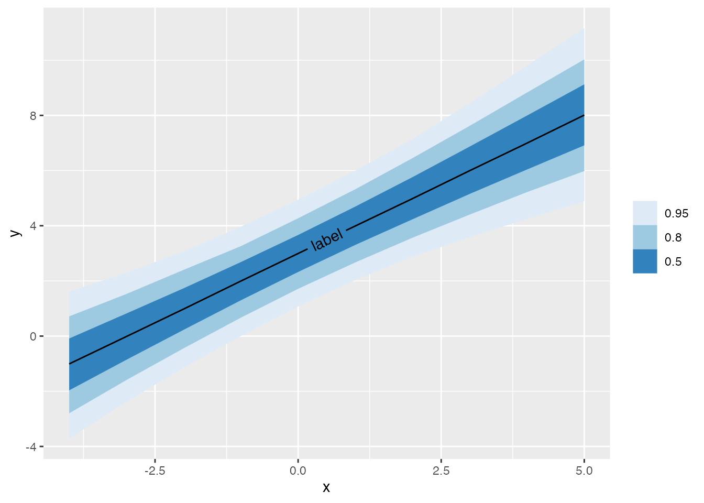

library(tidyverse)
library(ggdist)
library(geomtextpath)Prerequisites
To access the datasets, help pages, and functions that we will use in this code snippet, load the following packages:
Directly labeling lineribbons
First make some data.
set.seed(1234)
n = 5000
df <- tibble(
.draw = 1:n,
intercept = rnorm(n, 3, 1),
slope = rnorm(n, 1, 0.25),
x = list(-4:5),
y = map2(intercept, slope, ~ .x + .y * -4:5)
) %>%
unnest(c(x, y))Then plot it.
df %>%
group_by(x) %>%
median_qi(y, .width = c(.50, .80, .95)) %>%
ggplot(aes(x = x, y = y, ymin = .lower, ymax = .upper)) +
# Hide the line from geom_lineribbon() by setting `size = 0`
geom_lineribbon(size = 0) +
scale_fill_brewer() +
# Replace the hidden line with a labelled line
geom_textline(label = "label")

Michael McCarthy
Thanks for reading! I’m Michael, the voice behind Tidy Tales. I am an award winning data scientist and R programmer with the skills and experience to help you solve the problems you care about. You can learn more about me, my consulting services, and my other projects on my personal website.
Session Info
─ Session info ───────────────────────────────────────────────────────────────
setting value
version R version 4.1.1 (2021-08-10)
os macOS Mojave 10.14.6
system x86_64, darwin17.0
ui X11
language (EN)
collate en_CA.UTF-8
ctype en_CA.UTF-8
tz America/Vancouver
date 2022-11-23
pandoc 2.14.0.3 @ /Applications/RStudio.app/Contents/MacOS/pandoc/ (via rmarkdown)
quarto 1.2.269 @ /usr/local/bin/quarto
─ Packages ───────────────────────────────────────────────────────────────────
package * version date (UTC) lib source
dplyr * 1.0.10 2022-09-01 [1] CRAN (R 4.1.2)
forcats * 0.5.1 2021-01-27 [1] CRAN (R 4.1.0)
geomtextpath * 0.1.1 2022-08-30 [1] CRAN (R 4.1.2)
ggdist * 3.1.1.9001 2022-06-19 [1] Github (mjskay/ggdist@25a813d)
ggplot2 * 3.3.6 2022-05-03 [1] CRAN (R 4.1.2)
purrr * 0.3.4 2020-04-17 [1] CRAN (R 4.1.0)
readr * 2.1.2 2022-01-30 [1] CRAN (R 4.1.2)
sessioninfo * 1.2.2 2021-12-06 [1] CRAN (R 4.1.0)
stringr * 1.4.0 2019-02-10 [1] CRAN (R 4.1.0)
tibble * 3.1.6 2021-11-07 [1] CRAN (R 4.1.0)
tidyr * 1.2.0 2022-02-01 [1] CRAN (R 4.1.2)
tidyverse * 1.3.1 2021-04-15 [1] CRAN (R 4.1.0)
[1] /Users/Michael/Library/R/4.1/library
[2] /Library/Frameworks/R.framework/Versions/4.1/Resources/library
──────────────────────────────────────────────────────────────────────────────Reuse
Citation
BibTeX citation:
@online{mccarthy2022,
author = {Michael McCarthy},
title = {Directly Labeling Ggdist Lineribbons with Geomtextpath},
date = {2022-10-29},
url = {https://tidytales.ca/snippets/2022-10-29_geomtextpath-with-ggdist},
langid = {en}
}
For attribution, please cite this work as:
Michael McCarthy. (2022, October 29). Directly labeling ggdist
lineribbons with geomtextpath. https://tidytales.ca/snippets/2022-10-29_geomtextpath-with-ggdist
Comments